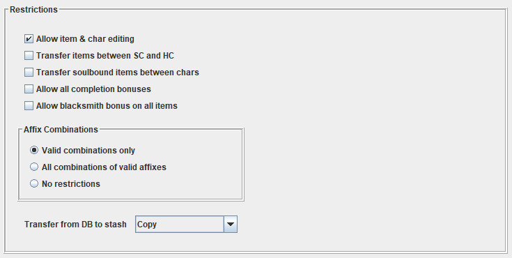

Prerequisites
GD Stash is a Java application. In order to run it, you need to have a Java Virtual Machine (JVM) installed.
You can download one below
If you use a 64 bit Windows, download the 64 bit Java Virtual Machine.
Installation
No installation is required, simply extract the zip file to a directory of your choice and double-click the .jar file
to execute it.
Upgrading
Place the zip file of the new version in the directory you installed GD Stash in and extract it there,
overwriting the existing files.
If your unzip tool does not 'like' overwriting files, delete the content of the directory. Your items are
stored in a separate directory in your user-directory (usually C:\Users\<username>\GDStash), so your
items are save when doing this.
If the database format has changed in the new version of GD Stash (or it has additional configuration options),
a popup will be shown when you run the program (see below). When the configuration has changed, review the options
and save it again, even if you keep the default settings. When the database format has changed, simply import
it again (after having updated the configuration, in case both changed).
Configuration
When starting GD Stash for the first time, it will remind you to configure GD Stash and import the Grim Dawn data.
It will take you right to the configuration page, which consists of several parts.
The directories
| Grim Dawn installation directory | The directory Grim Dawn is installed in. |
| Grim Dawn save game directory |
The directory Grim Dawn saves its savefiles (the shared stashes, e.g transfer.gst) in.
The tool will confirm the directory by checking for the shared stash (file transfer.gst or transfer.gsh). If neither is found it will not accept the directoy. The file is created the first time you talk to the smuggler in Devil's Crossing, so make sure you have done that / the file exists if the tool does not accept your save directory. Depending on whether you use Steam cloud saving or not, the location will differ. If you are using local saves, the files are in C:\Users\<username>\Documents\My Games\Grim Dawn\save If you do use Steam cloud saving (not recommended), the files are inC:\Program Files (x86)\Steam\userdata\<folder of numbers>\219990\remote\save Based on feedback I recevied, this seems to avoid most of the potential pitfalls of cloud saving (I do not use cloud saves). You can always store items in GD Stash while playing Grim Dawn with cloud save enabled, but do not change the Grim Dawn files (stash or char) while playing. See the FAQ for more details. |
| Grim Dawn Localization file |
The .zip file of the community translation you want to use. If you specify no localization file, the Grim Dawn
texts are being used. The localization file is used during the database import only. |
| Selected mod | Specifies which mod you are using. Each mod needs to have its database imported. For each mod a separate database is being created to avoid conflicts between mods. This also means each mod has a separate collection of items. An item stored under one mod can be placed in the shared stash of a different mod, the tool does not prevent this. If you then however load that stash in that mod and the item is not supported by that mod, Grim Dawn will silently remove it and you lose the item (unless you copied it, rather than transferred it), so be careful when placing items of one mod in the stash of another. The same is true for characters you play in a mod, except that the character does not 'belong' to any mod (the shared stash stores the info which mod it is from in the file, a char does not). |
| Total Conversion mod |
When a mod is flagged as being Total Conversion, only its database will be imported, not also Grim Dawn's. Make sure to only use it if the mod does not use any Grim Dawn data (items, affixes, etc.). |
The UI settings.
| Language | The language used in the UI, can be changed on the fly. |
| Look & Feel | The Java Look & Feel used by the UI. Which looks are available depends on the OS. GD Stash defaults to 'Metal' which should be available on all platforms. |
| Font size | The font size used in the UI, can be changed on the fly. |
| Graphic scale | The percentage images are scaled to, images here are the items in the stash. Icons are not scaled, instead different sizes are used based on the font size. |
The GD Stash settings
By default all settings are set so only items that could be created in Grim Dawn can be created by crafting in GD Stash.

| Transfer items between SC and HC |
Whether items may be transferred between softcore and hardcore stashes. Any item stored in GD Stash retains the information whether it is a softcore or hardcore item, based on whether it was imported from a softcore or hardcore stash or character. If this flag is not set, the item search on the Transfer page will only return items that are either softcore or hardcore, depending on the selected transfer stash / character. |
| Transfer soulbound items between chars |
Whether soulbound items may be transferred between characters. Any soulbound item stored in GD Stash retains the information of which character the item belongs to. If this flag is not set, the item search on the Transfer page will not show any soulbound items while the Char Transfer will only return soulbound items that are bound to the currently selected character. All items that are not soulbound and match the search criteria are also shown. |
| Allow all completion bonuses | If the flag is set, any relic can have any completion bonus when crafting one, not just the ones allowed for the relic by Grim Dawn. |
| Allow blacksmith bonus on all items | If the flag is set, a blacksmith bonus can be selected for any item while crafting, even items that cannot be created by a blacksmith (e.g. most epics or legendaries, all monster infrequents) |
| Affix Combinations |
When crafting an item, certain items are restricted to certain affixes only, e.g. 1-handed weapons have
different (weaker) affixes than 2-handed weapons. In addition, some items can only have a prefix or
a suffix, not both. 'Valid combinations only' only allows affixes and affix combinations while crafting that are allowed by Grim Dawn. 'All combinations of valid affixes' allows prefix and suffix combinations that Grim Dawn would not allow, but only affixes that are valid for the specific item. 'No restrictions' allows all affixes on an item, even ones that Grim Dawn does not allow, it also allows all affix combinations. |
| Transfer from DB to stash | This option determines whether an item stored in GD Stash's database is being copied to the shared stash / char inventory or moved. In the latter case the item is being deleted from the database at the same time. While this ensures that there really is only one version of the item, it also means that you could lose the item if you load it into a mod where that item does not exist. |
Save configuration and import the Grim Dawn database
| Save settings | Saves the configuration. |
| Import database |
Imports the Grim Dawn database.arz into the GD Stash database. This is required to use GD Stash.
If during the import you get an error about heap size (some people do), start the JVM with an increased heap size. See the FAQ for more details. |